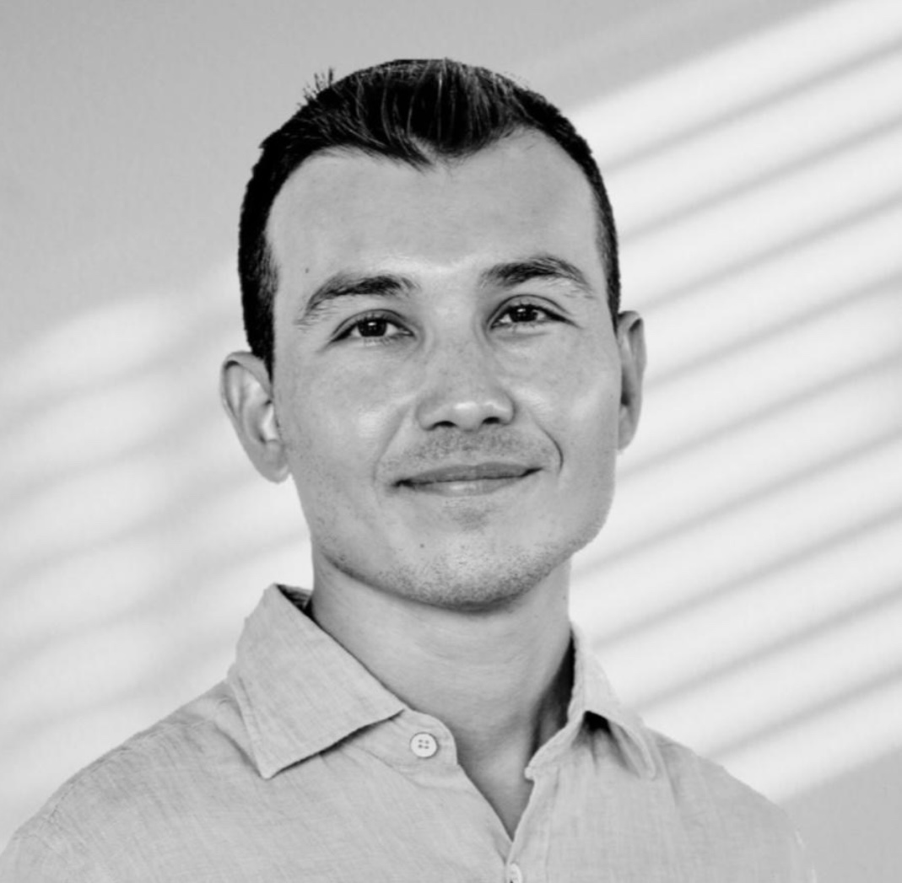

Lucid Mind & Soul
Consulting & Coaching
Lucid ile Yolculuk
Lucid, her şeyin üst üste geldiği o anlar için kuruldu.
Zihninin dağıldığı, göğsünün ağırlaştığı, kendine “Şu anda kendime nasıl destek olabilirim?” diye sorduğun o anlar için.
Hayatında büyük bir değişimden geçiyor olabilirsin, bir kaybı sindirmeye çalışıyor olabilirsin, işinde ya da özel yaşamında yönünü kaybetmiş olabilirsin… Ya da sadece artık kendinle yeniden bağlantı kurmak istiyor olabilirsin.
İşte tam bu noktada buradayız: Durmana, düşünmene ve ileriye doğru ilk adımı atmana eşlik etmek için.
Hem bedeninin hem gelecekteki senin minnet duyacağı bir adım.
Lucid olarak inanıyoruz ki dönüşüm düz bir yol değil. Bazen açık, net ve keyifli; bazen de belirsiz, zor ve inişli çıkışlı bir yol. Ama o yol orada. Biz yola çıkmaya karar verdiğimizde, her seferinde bizi kendimize biraz daha yaklaştırıyor.
Lucid, Seha Şahin’in terapi, koçluk, içsel dönüşüm ve profesyonel yolculuğunda edindiği 10 yılı aşkın deneyimin içinden doğdu.
Burada; psikoloji, nörobilim, koçluk teorileri ve ruhsal içgörü gibi alanlardan beslenen bir yaklaşımla, hem bilimsel hem de derinlemesine kişisel bir dönüşüm alanı sunuyoruz.
Kimler için Lucid?
- Yeni bir kültürde aidiyet ve kimlik arayışında olan göçmenler & expatlar
- Başarılı ama duygusal olarak kopuk hisseden profesyoneller
- Zorlayıcı değişimlerden geçen, yeniden denge kurmak isteyenler
Lucid ne sunuyor?
- Hedef odaklı dönüşüm & kariyer
- İletişim ve sosyal beceriler
- İçsel dönüşüm & farkındalık
- Kriz ve değişim
Hangi konularda yol arkadaşlığı edebiliriz?
- Yas, tükenmişlik veya kırılma noktalarından geçenler
- Yaşamını değerleriyle uyumlu bir şekilde yaşamak isteyen profesyoneller
- Sessizce “Buradan nereye gideceğim?” diye soran herkes için
Amacımız, zihninde dolaşan binlerce düşünce, duygu ve inanç arasında o sisin içinden geçen bağlantıları kurmana yardımcı olmak.
Ve seni kendi içsel bilgeliğine, kendi gücüne nazikçe geri götürmek.
Eğer bir kıpırtı hissediyorsan, ön görüşme için randevunu al. Nerede olduğunu ve nereye gitmek istediğini konuşalım.
Unutma, her şeyi tek başına çözmek zorunda değilsin.
Seha Şahin Kimdir?
Merhaba, ben Seha.
Hayatım boyunca birçok farklı kimliğe büründüm; farklı ülkelerde, farklı mesleklerde, farklı roller üstlendim. Ama zamanla anladım ki tüm bu yollar beni aslında tek bir yere götürüyor: kendime.
Boğaziçi Üniversitesi’nde eğitimimi tamamladıktan sonra kurumsal hayata hızlı bir giriş yaptım. Medya, danışmanlık, yazılım, eğitim gibi alanlarda çalıştım; uluslararası şirketlerde görev aldım, yurt dışına taşındım, sekiz yıl boyunca uzaklarda hayat kurmaya çalıştım. Bu süreçte hem yeni bir kültürde aidiyet bulmaya çalışan bir göçmen oldum, hem de dışarıdan “başarılı” gözüken ama duygusal olarak kopuk hisseden bir profesyonel. Kağıt üstünde başarılıydım. Ama içten içe hep başka bir şeyin eksikliğini hissediyordum.
Özellikle yalnızlıkla ve belirsizlikle baş başa kaldığım zamanlarda geçmişimle yüzleştim. Bastırılmış duygularım su yüzüne çıktı. Zor oldu ama beni dönüştüren de bu süreç oldu. İçimde yıllarca görmezden geldiğim parçalarla tanıştım. Kendime dürüstçe bakmayı, kendimle kalmayı ve en önemlisi, kendime şefkat göstermeyi öğrendim.
Bu içsel dönüşüm, zamanla başkalarına da alan tutmak, onları da duyulmuş ve görülmüş hissettirmek için içimde bir çağrıya dönüştü. Çünkü fark ettim ki, bir kişi kendini dönüştürdüğünde sadece kendi hayatını değil, çevresindekilerin hayatlarını da etkiliyor.
Bu yüzden “Lucid”i kurdum.
Bugün kişisel dönüşüm danışmanı olarak, hem eğitimlerim hem de hayat deneyimlerimle harmanladığım bir yaklaşımla danışanlarıma eşlik ediyorum.
- İstanbul Üniversitesi’nden 120 saatlik Yaşam Koçluğu Sertifikası
- Boğaziçi Üniversitesi & Yaşam Atölyesi ortaklığıyla 72 saatlik Dönüşümsel Koçluk Programı
- 10 yılı aşkın süredir psikodinamik terapi deneyimi (danışan olarak)
- İnanç kalıplarını tanıma ve dönüştürme üzerine öz-öğrenim
-
Nörobilim, felsefe ve psikoloji odaklı kaynaklardan beslenen bir yaklaşım
- Ellen Langer (Harvard)
- ACE Test (CDC)
- Lazarus & Folkman’ın baş etme kuramları
- Adler psikolojisi, bağlanma kuramı, travma çalışmaları
Tüm bu birikimi, duygusal farkındalıkla yapısal ilerlemeyi bir araya getiren bir yöntemle sunuyorum. Çünkü inanıyorum ki; gerçek dönüşüm, insanın kendine doğru çıktığı yolculukla başlar.
Sen de bu yolculukta kendine yaklaşmak istersen, birlikte yürüyebiliriz.
Sevgiyle,
Seha